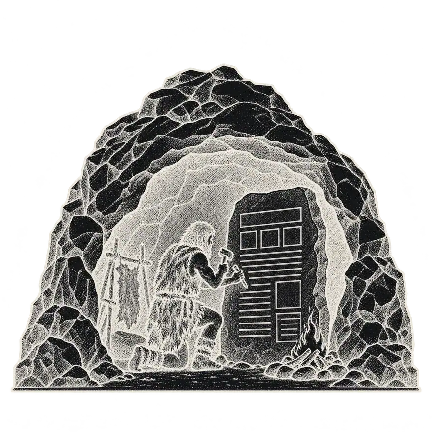
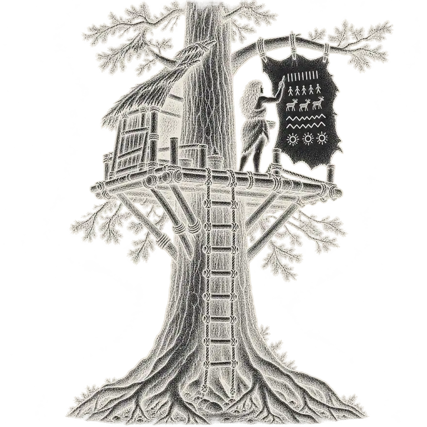
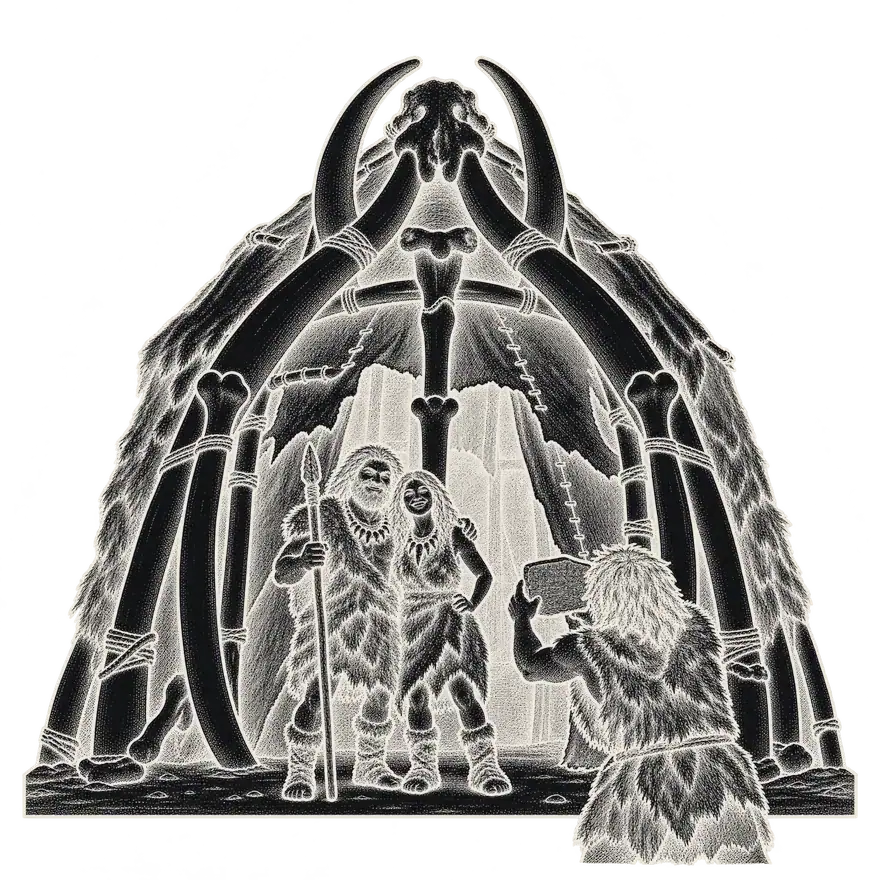
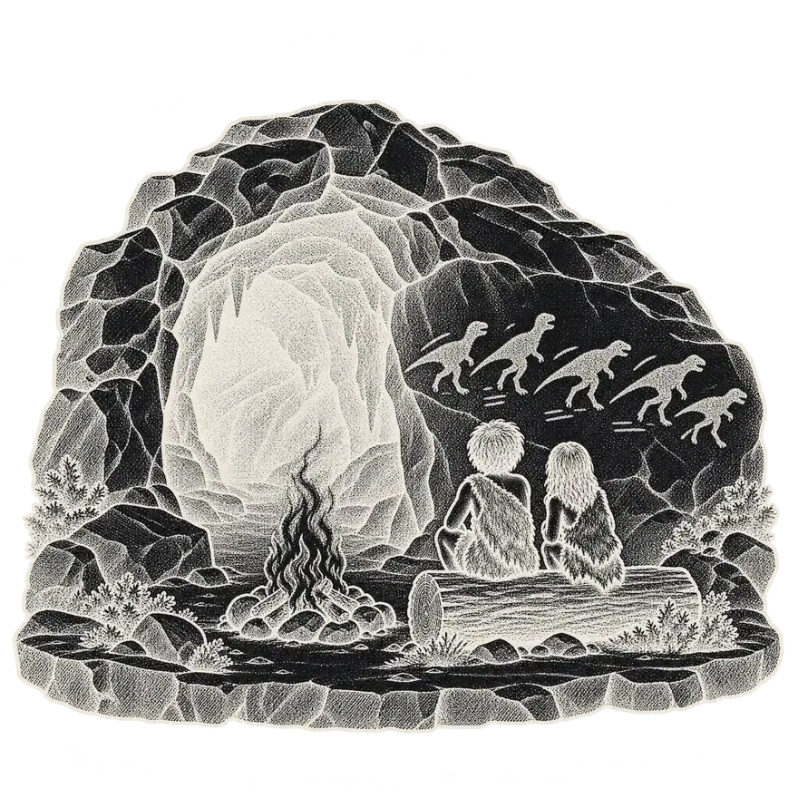
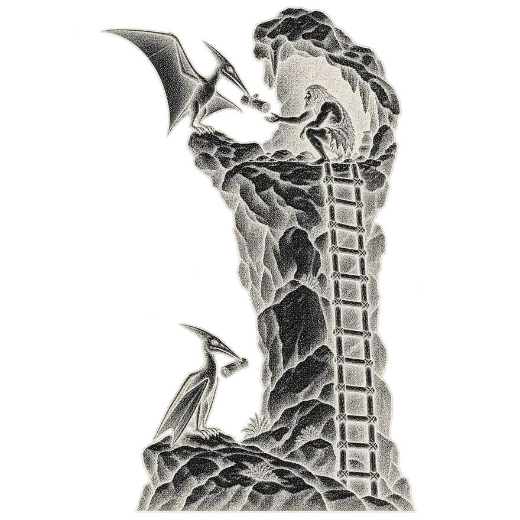
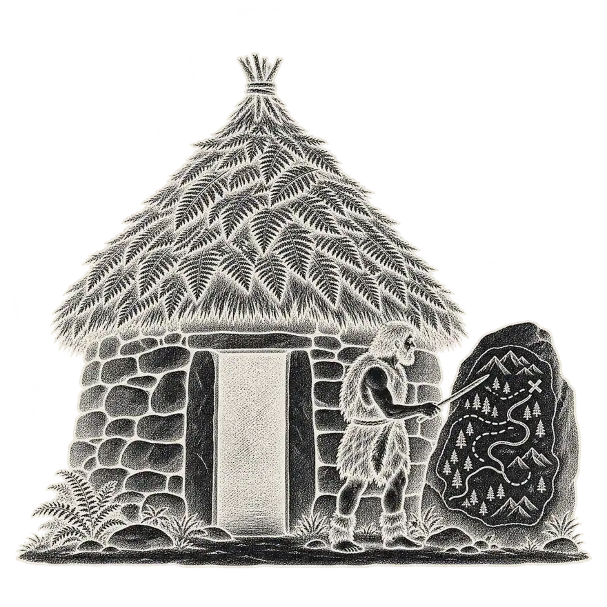
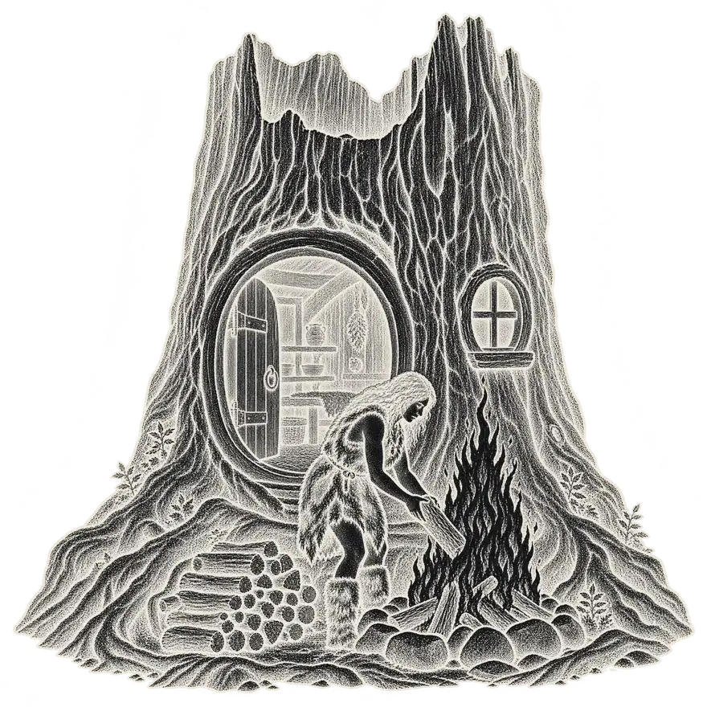
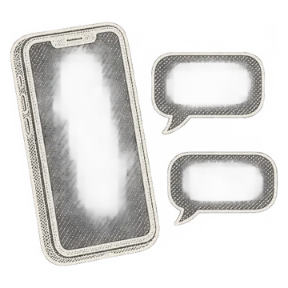
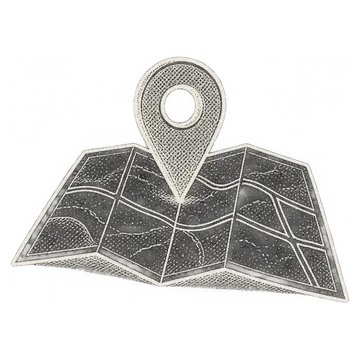

Alfred Wong Kai Xiang · Klang, Selangor
Good websites. No excuses.
Websites, social media marketing and AI WhatsApp chatbots for businesses across Malaysia.
About Alfred
Hello, I'm Alfred. I've built 50+ websites for businesses across Malaysia, and I like things that are clear, quick to load and easy to use.
From Klang, I work with property developers, manufacturers, restaurants, florists, tailors, lash studios and preschools. Alongside the websites I run social media marketing and set up AI WhatsApp chatbots. I write in English, Malay and Mandarin, and I reply to every message myself.
My goal is to turn a boring outdated website into something that customers will actually stop and scroll, because a business needs more than a nice homepage.

Web design
Copywriting
Social media
Reels and video
WhatsApp chatbots
Google Maps
Hosting and care
Seven things, one person
Things I do
Websites
Designed and built from scratch, mobile-first and quick to load. You own them outright.
Copywriting
Words that turn visitors into enquiries, written in English, Malay or Mandarin.

Social media marketing
A monthly plan for Instagram, Facebook and TikTok, posted consistently in the language your customers speak.
AI WhatsApp chatbots
An assistant that answers common questions at any hour, shares your prices and opening times, and passes the chat to you when a person is needed.
Reels and video
Short videos and post designs that show your business at its best.

Google Maps
Google Business Profile, Maps and reviews set up so nearby customers can find you.
Hosting and care
Domain, hosting and every update after launch. New prices or photos? Just WhatsApp me.
- Not sure where to start?Four short questions
Good news for early risers. From this Saturday we open at 8am. Come in for breakfast and bring a friend.
Berita baik untuk anda yang suka bangun awal. Mulai Sabtu ini, kami dibuka seawal jam 8 pagi. Jemput datang bersarapan bersama kawan-kawan.
早起的朋友们，好消息来了。从这个星期六开始，我们早上8点就开门，欢迎约上朋友一起来吃早餐。
Not sure where to start?
Four short questions, then a plain suggestion. You can change your answers at any time.
Whatever the business, I follow the same simple approach.
- 01
We talk
A short WhatsApp call about your business, your customers and what the website needs to do.
- 02
I design
You get a preview link within days, and we refine it together until it feels right.
- 03
I build
Mobile-first and fast, structured to be found on Google, on your own domain.
- 04
I launch and look after it
I put it live, connect Google and WhatsApp, and update it whenever you message me.
What people say
“Alfred understood the business straight away. The website was live within a few weeks and customers now WhatsApp us directly from Google.”
“Clear communication from start to finish. The site explains our electrical services properly and looks professional on a phone, which is where most of our enquiries come from.”
Here are ten of the 50+ websites I've built.
Rest on a picture to scroll through the homepage.Each picture scrolls through its homepage when it reaches the middle of your screen.
-
V2 Development
Freehold bungalows, semi-detached and terrace homes across Shah Alam, Meru, Kapar, Pulau Indah and Sepang.
Visit the site: V2 Development (opens in a new tab) -
Starwill Chemicals
A Malaysian maker of aerosols, lubricants, cleaners and paints, in business since 1992.
Visit the site: Starwill Chemicals (opens in a new tab) -
Hebron Lifts and Renovations
Stairlifts, home lifts and platform lifts, supplied, installed and maintained for homes and buildings.
Visit the site: Hebron Lifts and Renovations (opens in a new tab) -
Best Sister Florist
Custom hand bouquets, flower stands, wedding dulang and event florals, with delivery.
Visit the site: Best Sister Florist (opens in a new tab) -
EPS Sports Academy
Football and swimming programmes for children, from babies to teenagers, across three venues.
Visit the site: EPS Sports Academy (opens in a new tab) -
Baby Boss Lash Studio
Bespoke eyelash extensions, with every set and its price on the page and bookings taken on WhatsApp.
Visit the site: Baby Boss Lash Studio (opens in a new tab) -
MasterPiece Tailor
Bespoke suits, shirts, trousers, tuxedos and womenswear, made to measure since 1998.
Visit the site: MasterPiece Tailor (opens in a new tab) -
Safiyya Pet Shop
A neighbourhood pet shop for pet food and supplies.
Visit the site: Safiyya Pet Shop (opens in a new tab) -
Yakiniku Ichiban
A Japanese BBQ restaurant serving wagyu grilled over charcoal.
Visit the site: Yakiniku Ichiban (opens in a new tab) -
Sunshine Tots + Tadika Si Cahaya
A childcare centre and preschool, with a photo gallery of the children at the centre.
Visit the site: Sunshine Tots (opens in a new tab)
Fast on a real phone, not just on my laptop.
I loaded each of the ten sites the way a customer on mobile data sees it, three times each. Hover or tap a bar for the numbers.
| Website | Main content visible | Page weight |
|---|---|---|
| Baby Boss Lash Studio | 0.9 s | 3.2 MB |
| Best Sister Florist | 1.0 s | 1.4 MB |
| MasterPiece Tailor | 1.2 s | 1.0 MB |
| Hebron Lifts | 1.2 s | 0.7 MB |
| Safiyya Pet Shop | 1.3 s | 1.2 MB |
| Yakiniku Ichiban | 1.3 s | 1.8 MB |
| Sunshine Tots | 1.3 s | 0.6 MB |
| Starwill Chemicals | 2.3 s | 0.5 MB |
| V2 Development | 2.8 s | 2.5 MB |
| EPS Sports Academy | 3.2 s | 5.1 MB |
Measured by me on 29 October 2026 (Baby Boss Lash Studio on 4 November 2026) in a test browser set up like a mid-range phone on mobile data: phone-sized screen, 9 Mbps download, 60 ms latency and a processor slowed to half speed. Each site was loaded three times with an empty cache and the middle result is shown. "Main content visible" is the moment the largest image or block of text appears. Your own speed will vary with your phone and signal.
Now picture yours.
Type your business name and choose what you do. It is a quick sketch to help you picture it; your real website is designed from scratch around your business.